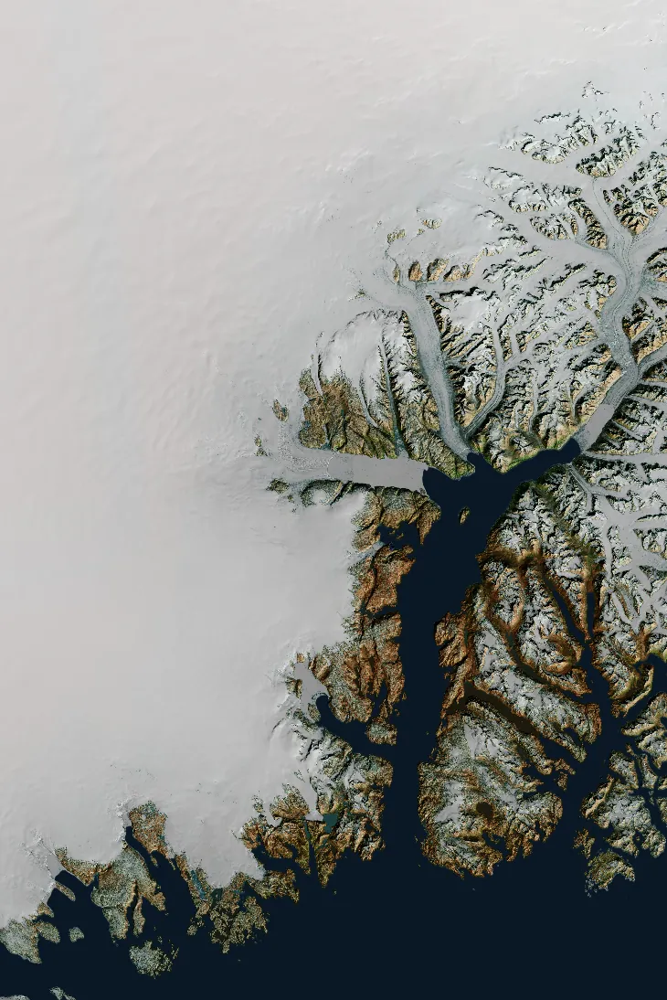
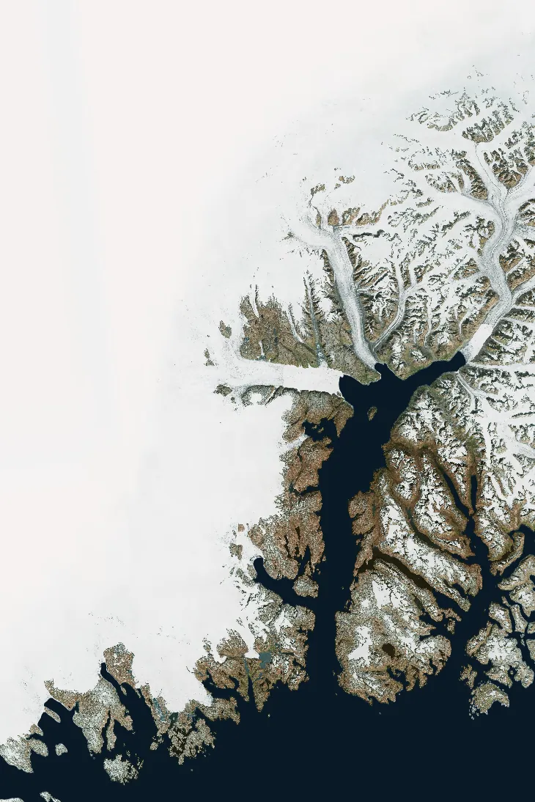

TerraTexture
Overview
I spent my PhD working with digital elevation models. I’d spend weeks processing terrain data and computing elevation change, then plot the results on a flat, grey, textureless basemap. All that topography vanished at exactly the moment I needed to show it to someone else.
That always felt like a shame. When you’re explaining why ice is thinning in more or less in one ice sheet fjord compared to the next, the shape of the land is half the story. A reader needs to see the mountains, troughs and channels to make sense of the numbers on top of/around them.
TerraTexture started as my answer to that, and grew into a set of experiments I’d been wanting to try:
- Open data: Could I replace the self-built local STAC catalogs from my PhD with public ones, so anyone could reproduce a map from scratch?
- Speed and memory: Could Rust make high-resolution DEMs (2–10 m) fast enough, and light enough on memory, to process on an ordinary laptop?
The result is an open-source Python package (MIT licence) with optional Rust components. You give it an area of interest. It fetches free elevation data from public STAC catalogs, works out where the land surface bends, and blends that texture into a contextily basemap, so scientific data sits on terrain you can actually read. It needs no signups, API keys or private infrastructure.
Data coverage
Data
- ArcticDEM and REMA mosaics at 2 m, 10 m and 32 m, from the Polar Geospatial Center, University of Minnesota. Licensed CC BY 4.0, with PGC’s acknowledgement policy.
- OpenTopography raster collections, including SRTM GL1, Copernicus GLO-30, NASADEM and many regional lidar DEMs. Licensing varies by collection and is read from each collection’s STAC metadata.
- Basemap imagery via contextily. Esri World Imagery is the default, and any keyless provider works.
- Coordinate reference systems:
- EPSG:3413 (NSIDC Polar Stereographic North) for ArcticDEM
- EPSG:3031 (Antarctic Polar Stereographic) for REMA
- EPSG:4326 for OpenTopography bounds
- EPSG:3857 for basemap tiles
The Journey
Starting from a figure I didn’t like
It began with one of my own PhD figures. It was a map of elevation change that was scientifically correct but visually flat. The colours told you something was happening; nothing told you where in the landscape it was happening. Hillshades lived in my analysis notebooks but rarely made it into the final maps. Imagery from contextily gave context, but no sense of relief.
I wanted both at once: a familiar basemap with the terrain pressing up through it, acting as a stage for scientific data rather than a decoration.
CHALLENGE 1: from private catalogs to public ones
During my PhD, I organised my DEMs through self-built STAC catalogs on local storage. That worked well for me, but it meant my maps depended on data and infrastructure nobody else could access. If someone wanted to recreate a figure, they’d first have to rebuild my catalog.
So the first experiment was to throw that away and see whether I could do everything from public, unauthenticated STAC catalogs instead. That would keep the whole pipeline open source, from the data through to the final figure.
It turned out to be two problems rather than one, because public catalogs come in two flavours:
- Dynamic (PGC, for ArcticDEM and REMA). A STAC API with a search endpoint. You send a bounding box, the server does the spatial search, and you page through the results.
- Static (OpenTopography). A tree of JSON files with no search endpoint at all. You have to walk through the collections yourself and filter tiles by bounding box locally.
I built one general engine for each style of catalog and made each data product a thin wrapper on top. Moving from a catalog I’d designed myself to ones designed by other people taught me a lot about how STAC behaves in the wild: pagination, inconsistent asset names, and licence metadata I’d never had to think about before.
Making the terrain readable
To pick out the landforms, the tool computes two kinds of curvature, following Zevenbergen & Thorne (1987):
- Profile curvature shows where slopes steepen or flatten.
- Planform curvature shows where flow converges into channels or spreads across ridges.
These are blended with an analytical hillshade using soft-light and luminosity blend modes, then draped over the contextily basemap. A lot of this was trial and error: tuning the contrast and blend strength until the terrain read clearly without overwhelming the colours of the data on top.
The final step burns a scientific layer, such as elevation change, directly onto the relief. That was exactly the map I’d wanted during my PhD.
CHALLENGE 2: Exploring rust for speed and memory
Everything worked in NumPy at 32 m. At 2–10 m, it started to struggle, and it was memory, not just time, that became the limit.
The scale is the problem. A 50 × 50 km area is:
- about 25 million pixels at 10 m, or roughly 100 MB per float32 array
- about 625 million pixels at 2 m, or roughly 2.5 GB per array
NumPy evaluates a formula one operation at a time, creating a full-size temporary array at each step. My curvature and blend maths had many steps. A single blend could briefly hold several copies of an already huge array, which was enough to exhaust memory on a laptop.
That made it a good excuse to learn Rust. I rewrote the hot paths as fused kernels, where each kernel does the whole calculation for a pixel in one pass, with no intermediate arrays. There are five:
- Soft-light blend
- Luminosity blend
- Profile and planform curvature
- Hillshade
- Standard-deviation contrast stretch
Things I explored along the way:
- Memory first: Kernels write into a single output buffer allocated once by Python and handed straight back to NumPy, so there are no temporaries and no copies. At 2 m this matters as much as raw speed.
- Parallelism, but not everywhere: Large arrays are split across CPU cores with Rayon. Small arrays run serially, because starting threads costs more than it saves. The switch-over threshold is still provisional, and measuring it properly is the next experiment.
- Testable without Python: Each kernel is a pure-Rust core function wrapped by a thin PyO3 layer, so I can test and benchmark the maths with cargo alone.
- Optional, to stay open: If the Rust extension isn’t available, the package quietly falls back to NumPy. Anyone can still install it with just NumPy and SciPy, which keeps it accessible.
Benchmark results
To see whether the rewrite was worth it, I benchmarked each kernel against its NumPy equivalent on square arrays from 16 × 16 up to 4096 × 4096 pixels. The largest size is 16.8 million pixels, roughly an 8 × 8 km tile at 2 m or a 41 × 41 km tile at 10 m.
Speed-up over NumPy by array size
Square arrays, 16 × 16 to 4096 × 4096 pixels. Hover or tap for values.
Peak memory at 4096 × 4096 pixels
Hollow ring = NumPy, filled dot = Rust. Shorter is better.
| Kernel | NumPy | Rust | Speed-up | Peak memory (NumPy → Rust) |
|---|---|---|---|---|
| Luminosity blend | 4,181 ms | 85 ms | 49× | 1.43 GB → 0.61 GB |
| Soft-light blend | 319 ms | 19 ms | 17× | 585 MB → 353 MB |
| Hillshade | 810 ms | 67 ms | 12× | 755 MB → 575 MB |
| Contrast stretch | 163 ms | 19 ms | 9× | 409 MB → 318 MB |
| Curvature | 1,252 ms | 286 ms | 4× | 874 MB → 895 MB |
| All five kernels | 6.7 s | 0.48 s | 14× |
Peak memory is the process's peak resident set size, which includes a baseline of roughly 30–60 MB for the Python interpreter.
Running all five kernels on a full tile went from almost seven seconds to under half a second. The results also told a more interesting story than "Rust is faster":
- The biggest wins came from removing temporary arrays. The luminosity blend converts between colour spaces in many small steps, and NumPy allocated a full-size array for each one. Fusing them into a single pass made it 49× faster and cut peak memory from 1.4 GB to 0.6 GB.
- Curvature barely moved, and that was informative. It is a neighbourhood calculation that reads a 3 × 3 window around every pixel, so it is limited by memory bandwidth rather than arithmetic. NumPy's version was already running in optimised C. A 4× gain with no memory saving tells me the next improvement is a smarter algorithm, perhaps processing the DEM in tiles, rather than more parallelism.
- Parallelism has a price. Kernels switch to multi-threading at 256 × 256 pixels. For the luminosity blend that paid off immediately (43× at that size). For the soft-light blend the speed-up actually fell, to 5×, before jumping to 20× at 512 × 512. One threshold doesn't suit every kernel, so the next step is to tune it for each one.
Results: Example


Basemap only With relief blendDrag across the image. The fjords, outlet glaciers and ice margin only gain depth once curvature is blended in.
What I learned
Challenges, what you would do differently, next steps.
- Context is part of the science. A map that hides the topography makes readers work harder to understand the result.
- Open by default changes the design. Swapping my private catalogs for public ones forced me to handle other people’s conventions and licences. The payoff is that anyone can reproduce the maps.
- Real-world STAC is messier than the spec. Supporting both dynamic and static catalogs pushed me towards cleaner abstractions.
- With cloud-native data, the fastest download is the one you don’t make.
- At high resolution, memory is the real constraint. Rust’s fused kernels helped as much by avoiding temporary arrays as by running faster.
- Keep the fast path optional. The NumPy fallback means performance work never costs accessibility.
- Treat side projects like production code. CI/CD that runs formatting checks and Rust tests and deploys the docs automatically lets me experiment freely.
Where next:
- Stream 2 m tiles in chunks so even larger areas fit in memory
- Stabilise the CLI and publish to PyPI, increase ease of use
- Add more public elevation sources